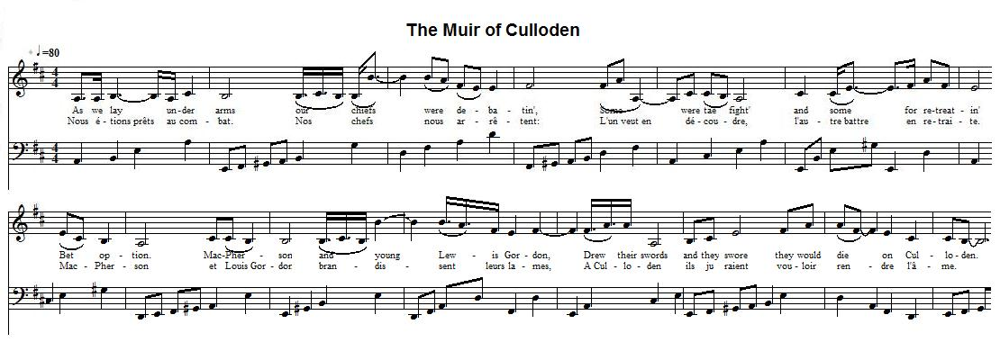

The Muir o Culloden
La lande de Culloden
Unknown author
From "Tobar an Dualchais" (http://www.tobarandualchais.co.uk/fullrecord/66020/1 )
Tune - Mélodie
"The Muir of Culloden"
as sung by Lizzie Ann Higgins (Mrs Elizabeth Youlden, 1929 -1993, born in Aberdeen, fish filleter)
Sequenced by Christian Souchon (c) 2015
|
To the tune:
Lizzie Higgins learned the slow air she used as the melody for this song from her father's piping . Her singing was recorded by Ailie Edmunds Munro and Peter R. Cooke on 4th May 1970 for the "School of Scottish Studies" (Permanent Link : http://www.tobarandualchais.co.uk/fullrecord/66020/1). To the lyrics: This song is appended by the poet George Murray (1819 - 1868) to his own composition "Culloden", published in his collection "Islaford and other poems" in 1845, pp. 125-128. He writes as an introduction to his poem: " The following song ... was composed to the tune and on the model of one of those ballad-foundlings which from time to time have appeared in our literature, possessing generally as much beauty, or dignity, or grandeur as to show that their births had been superior to their fortunes...[These] verses... have never, as far as I am aware, been published before." George Murray's own composition is a typical Victorian pastiche full of "wintry wind howling", of "scowling tempests" and "flooding tears". It borrows from its model the words "on Culloden" concluding each of the seven stanzas. |
A propos de la mélodie:
Lizzie Higgins chante ce poème sur une mélopée que son père interprétait souvent à la cornemuse . Son chant a été enregistré par Ailie Edmunds Munro et Peter R. Cooke le 4 Mai 1970 pour la "School of Scottish Studies" (Lien permanent: http://www.tobarandualchais.co.uk/fullrecord/66020/1). A propos des paroles: Ce chant a été publié par le poète George Murray (1819 - 1868) à la suite de sa propre composition "Culloden", dans un recueil consacré à ses œuvres, "Islaford et autres poèmes", en 1845, pp. 125-128. Il indique dans l'introduction à son poème: " Le chant qu'on va lire ... a été composé sur l'air et sur le modèle de l'une de ces ballades - enfants trouvés qui, de temps à autre, surgissent dans notre littérature, parées en général de suffisamment de beauté, de dignité et de grandeur, pour démontrer que leur origine les destinait à un destin littéraire plus éclatant ...[Ces] vers... n'ont, à ma connaissance, jamais été publiés à ce jour." Quant au poème de George Murray, c'est le type même du pastiche victorien, plein de "vent d'hiver qui hurle", de "tempêtes lugubres" et de "déluges de larmes". Il emprunte à son modèle les mots "à Culloden" qui concluent chacune des sept strophes. |

|
THE MUIR OF CULLODEN
1. I might sing o' my country, its deep glens and fountains, Of its woods, and its rivers, and steep-rising mountains— But I'll sing of a battle — the saddest in story, Of wintry Culloden, and Cumberland gory. 2. 'Twas the sixteenth of April, I'll ever remember, The night it was dark as the darkest December, The moon came by fits, something awful forebodin' To the clans the next day on the muir of Culloden. 3 (1). As we lay under arms our chiefs were debatin', Some were for the fightin' and some for the retreatin' Bet option. McPherson (Lochiel, and Lord Drummond), and young Lewis Gordon, Drew their swords and they swore (declared) they would die on Culloden. 4. The war-pipe is playing—the fierce charge is sounding; From the wild rocky hills are the echoes rebounding; If the charge had been given as the clans did at Flodden, The day had been ours on the muir of Culloden. 5. Some brave clans were there who did never appear, And for some cause or other they kept in the rear; "I fear there is treachery," the Prince was heard sobbin', "Alas for the clans on the muir of Culloden." 6. The Camerons, McPhersons, and the ClanRonalds, The Gordons, McGregors, and the McDonalds, They rushed to the charge, and thousands were trodden, Determined to conquer or die on Culloden. 7.(2) Nae mair the pipes play "Prince Charlie's a-comin'," Nae mair they (we) hurray that the Southrons (Red Coats) are runnin', But [now] for our Prince every Scots heart is sobbin' — And cauld lie the lads on the muir of Culloden! Source: "Islaford and other poems", 1845, pp. 125-128" Stanzas 3 and 7 are printed as sung by Lizzie Ann Higgins. The variants found in "Islaford" are in brackets. |
LA LANDE DE CULLODEN
1. Assez chanté, patrie, tes torrents et tes combes, Tes rivières, tes bois que tes cimes surplombent! — Tu dois la plus sombre page de ton histoire, Culloden, à Cumberland de triste mémoire. 2. Seize avril! Souvenir qui ne peut pas s'éteindre! La nuit était aussi noire qu'en plein décembre, Cette lune obscurcie, un bien mauvais augure: Clans, Culloden verrait votre déconfiture. 3 (1). Nous étions prêts au combat. Nos chefs nous arrêtent: L'un veut en découdre et l'autre battre en retraite. McPherson, Louis Gordon, en brandissant leurs lames, A Culloden juraient qu'ils voudraient rendre l'âme. 4. Voici que la cornemuse sonne la charge; Les rocs répètent au loin ses échos sauvages; Si l'esprit de Flodden nous eût emplis de rage, A Culloden nous faisions un nouveau carnage. 5. Mais des clans absents manquait la force guerrière, D'autres pour quelque raison restaient à l'arrière. Le Prince pleurait: "Fallait-il qu'on me trahisse! A Culloden les clans vont subir le supplice." 6. Cameron, McPherson, ClanRanald et leurs targes, Gordon, McGregor, Donald se ruent à la charge. En vain, ils sont piétinés, par milliers succombent Vaincre ou mourir... Culloden leur tient lieu de tombe. 7.(2) La cornemuse chantait "Charlie est en route" Et nos hourras saluaient les Southrons en déroute... Pour le Prince désormais nos cœurs se lamentent — Culloden, tant de héros gisent sous ta lande! (Trad. Christian Souchon (c) 2015) La traduction des strophes 3 et 7 suit la leçon de Lizzie Ann Higgins. La leçon "Islaford" est donnée entre parenthèses dans le texte anglais. |